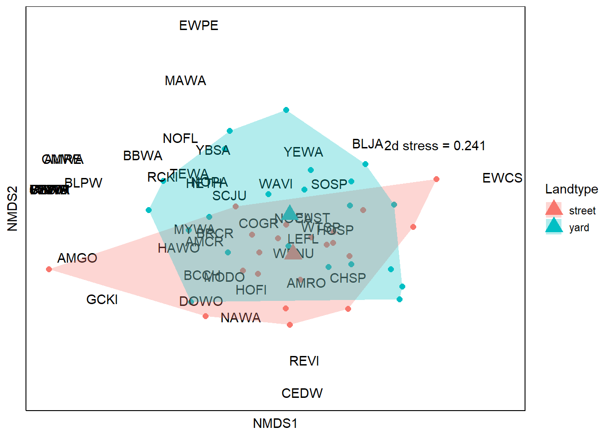

library(tidyverse)Warning: package 'tidyverse' was built under R version 4.4.3Warning: package 'ggplot2' was built under R version 4.4.3── Attaching core tidyverse packages ──────────────────────── tidyverse 2.0.0 ──
✔ dplyr 1.1.4 ✔ readr 2.1.5
✔ forcats 1.0.0 ✔ stringr 1.5.1
✔ ggplot2 3.5.2 ✔ tibble 3.2.1
✔ lubridate 1.9.3 ✔ tidyr 1.3.1
✔ purrr 1.0.2
── Conflicts ────────────────────────────────────────── tidyverse_conflicts() ──
✖ dplyr::filter() masks stats::filter()
✖ dplyr::lag() masks stats::lag()
ℹ Use the conflicted package (<http://conflicted.r-lib.org/>) to force all conflicts to become errorslibrary(lme4)Loading required package: Matrix
Attaching package: 'Matrix'
The following objects are masked from 'package:tidyr':
expand, pack, unpacklibrary(lmerTest)
Attaching package: 'lmerTest'
The following object is masked from 'package:lme4':
lmer
The following object is masked from 'package:stats':
steplibrary(pROC)Warning: package 'pROC' was built under R version 4.4.3Type 'citation("pROC")' for a citation.
Attaching package: 'pROC'
The following objects are masked from 'package:stats':
cov, smooth, varlibrary(caret)Warning: package 'caret' was built under R version 4.4.3Loading required package: lattice
Attaching package: 'caret'
The following object is masked from 'package:purrr':
liftlibrary(DHARMa)Warning: package 'DHARMa' was built under R version 4.4.3This is DHARMa 0.4.7. For overview type '?DHARMa'. For recent changes, type news(package = 'DHARMa')data2024 <- read.csv("2-Cleaned_data/ndg_cleaneddata_2024.csv")
data2025 <- read.csv("2-Cleaned_data/ndg_cleaneddata_2025.csv")
all_trees <- read.csv("2-Cleaned_data/all_trees.csv")
####PREPARING THE DATASET####
#1.# First we'll make the used dataset by modifying our datasheet to have the columns we're interested in
alldata <- bind_rows(data2024, data2025)
foragingdata <- subset(alldata, Behaviour.type == "Foraging") #just keeping foraging observations
#removing columns that are not needed in the model
foragingdata_filter <- foragingdata %>%
drop_na(c(Plant.sci, DBH)) %>%
select(-(Code:Plant.common)) %>%
select(-(Plant.genus:Plant.sp)) %>%
select(-(Notes:Landtype))
#our real observations are coded as '1' (used)
foragingdata_filter$Presence <- 1
#2.#Now we make the the available (0) dataset
#we'll randomly sample from the complete list of trees in the survey area
n <- nrow(foragingdata_filter)
l <- levels(as.factor((all_trees %>%
unite(united, c("Plant.sci","DBH")))$united))
set.seed(2901)
random_yard_obs <- tibble(united = sample(l,2*n, replace = T), .rows = 2*n) %>%
separate(united, c("Plant.sci","DBH"), sep = "_")
random_yard_obs$Presence <- 0
random_yard_obs$DBH <- as.integer(random_yard_obs$DBH)Warning: NAs introduced by coercion#3.# then we prep the df that will go into the model
#comibining used (1, real observations) and available (0, random sample)
foraging_rsf_df <- bind_rows(foragingdata_filter, random_yard_obs)
#changing our reference factor level to Norway maple
foraging_rsf_df$Plant.sci <- as.factor(foraging_rsf_df$Plant.sci)
foraging_rsf_df$Plant.sci <- relevel(foraging_rsf_df$Plant.sci, ref = "Acer platanoides")
####RUNNING THE MODEL####
#4.# With our model-ready df, we train and test
#now we split the dataset into a 'training' (70%) and 'testing' (30%)
set.seed(2901)
index <- createDataPartition(foraging_rsf_df$Presence, p = 0.7, list = FALSE)
forg_train_df <- foraging_rsf_df[index, ]
forg_test_df <- foraging_rsf_df[-index, ]
#running the model yipee
foraging_model <- glm(Presence ~ Plant.sci, family = binomial(), data = forg_train_df)
summary(foraging_model)
Call:
glm(formula = Presence ~ Plant.sci, family = binomial(), data = forg_train_df)
Coefficients:
Estimate Std. Error z value Pr(>|z|)
(Intercept) -1.1299 0.2510 -4.501 6.75e-06 ***
Plant.sciAbies balsamea -1.0674 1.0836 -0.985 0.324603
Plant.sciAcer freemanii -0.9496 1.0900 -0.871 0.383641
Plant.sciAcer ginnala -17.4362 3765.8472 -0.005 0.996306
Plant.sciAcer negundo 0.2826 0.5487 0.515 0.606587
Plant.sciAcer palmatum -0.6619 1.1089 -0.597 0.550581
Plant.sciAcer rubrum 0.4367 1.2502 0.349 0.726851
Plant.sciAcer saccharinum 1.0397 0.3148 3.303 0.000958 ***
Plant.sciAcer saccharum -17.4362 4612.2020 -0.004 0.996984
Plant.sciAesculus octandra -17.4362 2917.0127 -0.006 0.995231
Plant.sciAmelanchier canadensis -17.4362 3765.8472 -0.005 0.996306
Plant.sciAmelanchier laevis -17.4362 3765.8472 -0.005 0.996306
Plant.sciBerberis thunbergii -17.4362 4612.2020 -0.004 0.996984
Plant.sciBetula nigra -17.4362 2917.0127 -0.006 0.995231
Plant.sciBetula papyrifera -17.4362 3765.8472 -0.005 0.996306
Plant.sciCarpinus caroliniana -17.4362 6522.6386 -0.003 0.997867
Plant.sciCatalpa speciosa -17.4362 6522.6386 -0.003 0.997867
Plant.sciCeltis occidentalis -1.2680 1.0742 -1.180 0.237826
Plant.sciCercidiphyllum japonicum -17.4362 6522.6386 -0.003 0.997867
Plant.sciChamaecyparis nootkatensis 19.6959 4612.2020 0.004 0.996593
Plant.sciChamaecyparis pisifera -17.4362 6522.6386 -0.003 0.997867
Plant.sciCotinus coggygria -17.4362 4612.2020 -0.004 0.996984
Plant.sciDead standing -17.4362 6522.6386 -0.003 0.997867
Plant.sciEuonymus alatus 0.6190 0.7722 0.802 0.422769
Plant.sciFraxinus americana 0.2136 0.8735 0.245 0.806841
Plant.sciFraxinus pennsylvanica 1.7229 0.3701 4.656 3.23e-06 ***
Plant.sciGinkgo biloba -17.4362 2306.1010 -0.008 0.993967
Plant.sciGleditsia triacanthos 1.1299 0.8542 1.323 0.185933
Plant.sciGymnocladus dioicus -17.4362 6522.6386 -0.003 0.997867
Plant.sciLinnaea amabilis 1.1299 1.0310 1.096 0.273136
Plant.sciLiriodendron tulipifera -0.2564 1.1459 -0.224 0.822923
Plant.sciLonicera xylosteum 1.1299 1.4363 0.787 0.431492
Plant.sciMagnolia soulangeana -17.4362 3765.8472 -0.005 0.996306
Plant.sciMalus baccata -17.4362 4612.2020 -0.004 0.996984
Plant.sciMalus domestica 0.7244 0.6926 1.046 0.295589
Plant.sciMalus spp -17.4362 6522.6386 -0.003 0.997867
Plant.sciMalus sylvestris 1.5999 0.6229 2.568 0.010216 *
Plant.sciMorus alba 1.9772 0.7343 2.693 0.007090 **
Plant.sciOstrya virginiana 2.2285 1.1817 1.886 0.059312 .
Plant.sciPhiladelphus coronarius 19.6959 3261.3193 0.006 0.995181
Plant.sciPicea abies -17.4362 3765.8472 -0.005 0.996306
Plant.sciPicea glauca 1.6407 0.7722 2.125 0.033619 *
Plant.sciPicea pungens -0.3171 0.6098 -0.520 0.603097
Plant.sciPicea rubens 2.2285 0.8542 2.609 0.009085 **
Plant.sciPinus sylvestris -17.4362 6522.6386 -0.003 0.997867
Plant.sciPrunus cerasus -17.4362 3765.8472 -0.005 0.996306
Plant.sciPrunus communis -17.4362 3765.8472 -0.005 0.996306
Plant.sciPrunus japonica -17.4362 3765.8472 -0.005 0.996306
Plant.sciPyrus communis -17.4362 3765.8472 -0.005 0.996306
Plant.sciQuercus robur -17.4362 6522.6386 -0.003 0.997867
Plant.sciQuercus rubra 0.4367 1.2502 0.349 0.726851
Plant.sciQuercus warei -0.4796 1.1238 -0.427 0.669576
Plant.sciRhamnus cathartica -17.4362 4612.2020 -0.004 0.996984
Plant.sciSambucus nigra -17.4362 6522.6386 -0.003 0.997867
Plant.sciSorbus aucuparia -17.4362 6522.6386 -0.003 0.997867
Plant.sciSyringa reticulata -17.4362 2465.3257 -0.007 0.994357
Plant.sciSyringa vulgaris 0.3879 0.4589 0.845 0.397957
Plant.sciTaxus canadensis -17.4362 2465.3257 -0.007 0.994357
Plant.sciThuja occidentalis -1.1319 0.5328 -2.125 0.033622 *
Plant.sciTilia americana -17.4362 2917.0127 -0.006 0.995231
Plant.sciTilia cordata -0.7027 0.5941 -1.183 0.236911
Plant.sciTilia europaea -17.4362 6522.6386 -0.003 0.997867
Plant.sciUlmus americana 1.4175 0.5955 2.380 0.017300 *
Plant.sciUlmus hollandica -17.4362 4612.2020 -0.004 0.996984
Plant.sciUlmus morton -17.4362 3765.8472 -0.005 0.996306
Plant.sciUlmus pumila 2.9862 0.5425 5.505 3.69e-08 ***
Plant.sciWeigela florida -17.4362 4612.2020 -0.004 0.996984
---
Signif. codes: 0 '***' 0.001 '**' 0.01 '*' 0.05 '.' 0.1 ' ' 1
(Dispersion parameter for binomial family taken to be 1)
Null deviance: 897.10 on 697 degrees of freedom
Residual deviance: 660.91 on 631 degrees of freedom
AIC: 794.91
Number of Fisher Scoring iterations: 17####GOODNESS OF FIT####
#5.# testing our model for goodness of fit
##test 1: ROC & AUC
#the following code calculate the AUC
foraging_probs <- predict(foraging_model, forg_test_df, type = "response")
auc(forg_test_df$Presence, foraging_probs)Setting levels: control = 0, case = 1
Setting direction: controls < casesArea under the curve: 0.8176##test 2: DHARMa
#checking model disgnostics
diagnostics_forg_model <- simulateResiduals(foraging_model, n = 1000, plot = TRUE)